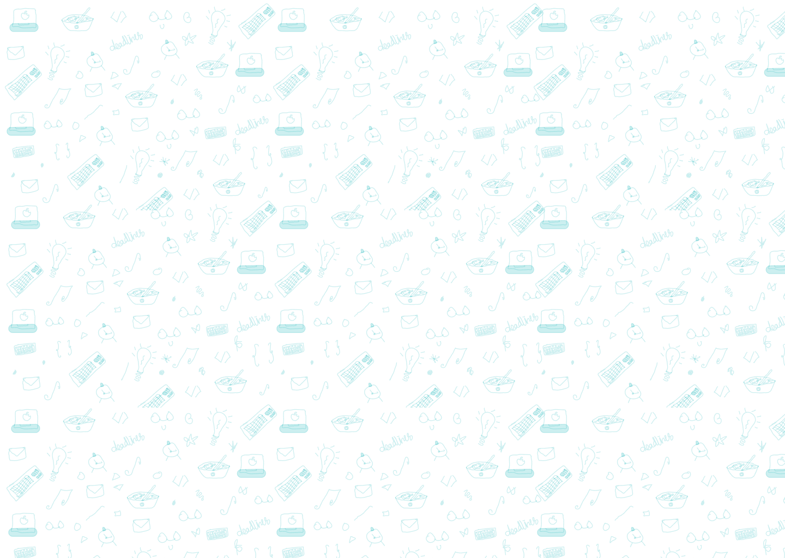

<seciton class="works">
	<div class="container">
		<div class="works__wrap" data-aos="fade-up" data-aos-anchor-placement="top-center">
			<h2 class="works__title">My recent <span>works</span></h2>
			<nav class="works__nav nav-works">
				<div class="nav-works__item active">All</div>
				<div class="nav-works__item">UI</div>
				<div class="nav-works__item">UX</div>
				<div class="nav-works__item">Web Design</div>
			</nav>
			<div class="works__row">
				<div class="works__block">
					<div class="works__item">
						
					</div>
					<div class="works__item">
						
					</div>
					<div class="works__item">
						
					</div>
				</div>
			</div>
		</div>
	</div>
	<div class="works__bg" data-aos="fade-down">
		
	</div>
</seciton>